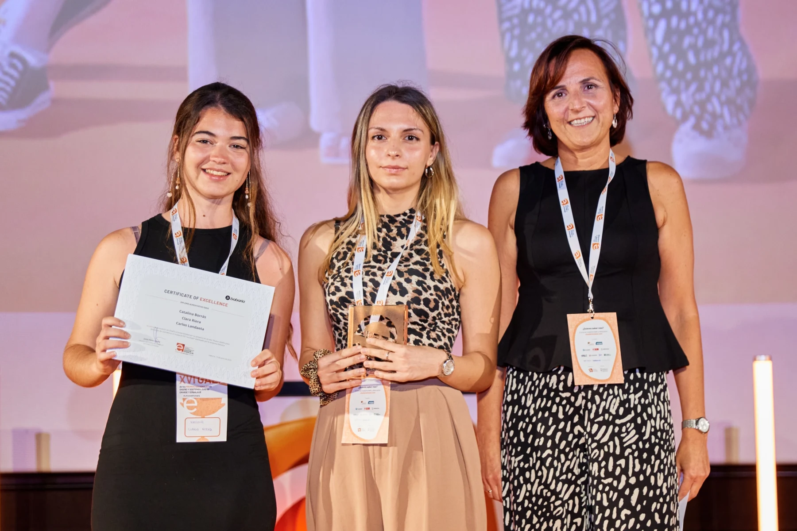

Portfolio seleccionado
ESDIB · Mallorca
Ideas que
toman forma.
Diseño de producto, exploración de materiales
y nuevas maneras de mirar lo cotidiano.
01 / Babaria Ver proyecto ↗Proyectos
Una selección de mi trabajo / 13


Sobre mí
Hola,
soy Catalina.
Estoy formándome como diseñadora de producto en la Escuela Superior de Diseño de las Islas Baleares (ESDIB).
Exploro procesos, materiales y soluciones para dar forma a ideas que buscan mejorar la vida cotidiana, combinando creatividad, funcionalidad y enfoque en el usuario.
- Formación
- Diseño de producto · ESDIB
- Herramientas presentes en mis proyectos
- Rhinoceros 7 · Fusion 360
